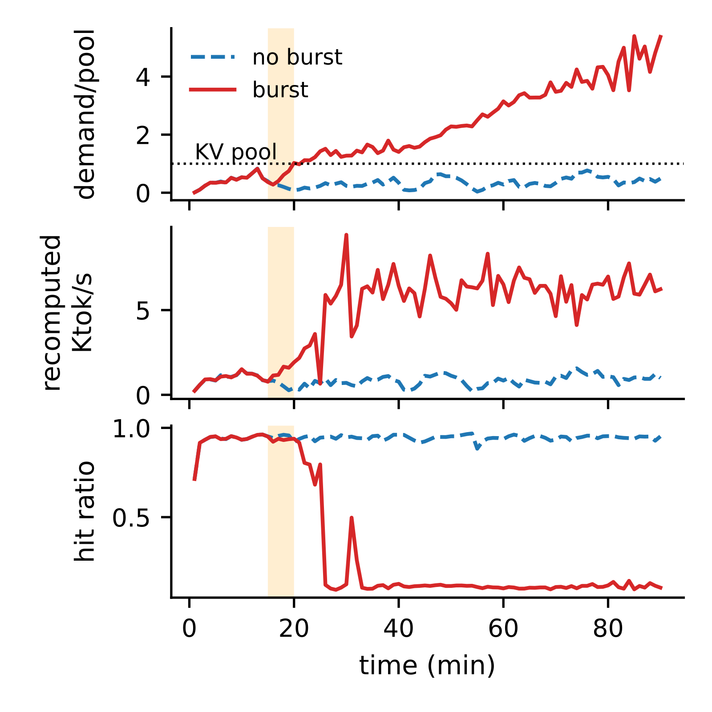
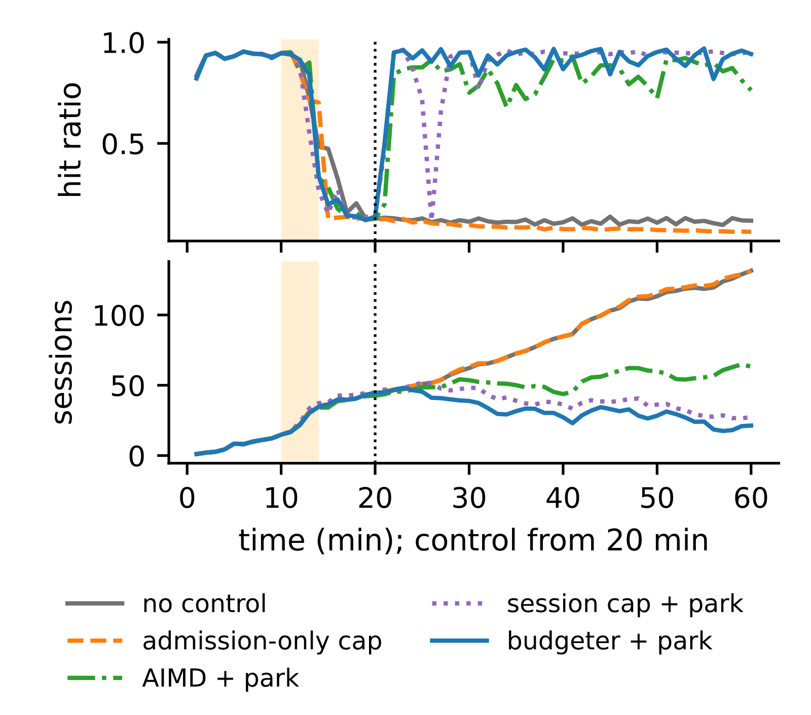
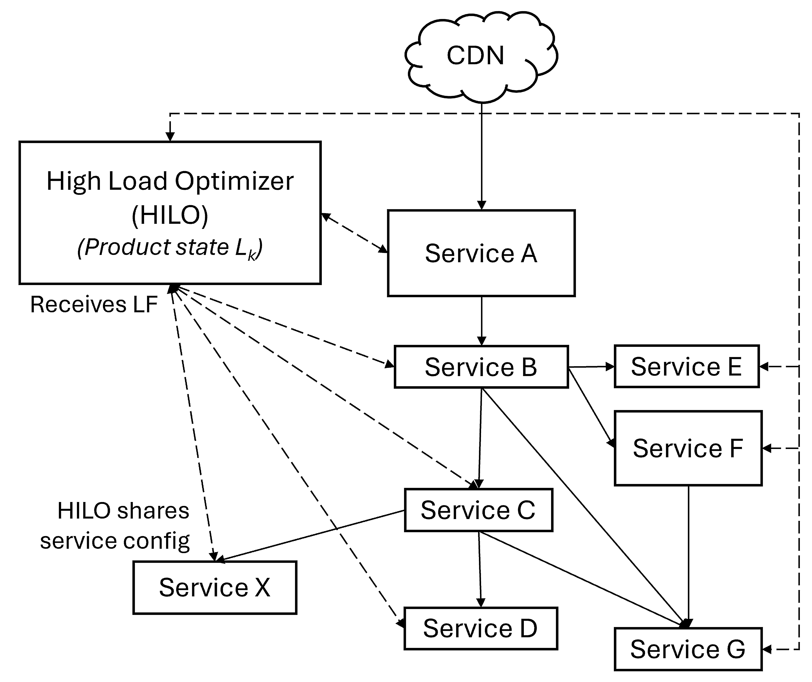

目录 · 7 节
1同样的到达，只差 5 分钟突发，一小时后一台健康一台崩溃2关掉 prefix cache，就只剩要追的活3回路：慢一点，人多一点，前缀装不下，再慢一点4只拦新会话，里面的会话还要轮轮重算5budgeter 记的是一本 token 账6停放让 7/7 在 5 分钟内恢复，只拦新会话 2/87停放有代价，也造不出容量这篇论文说明，开了 prefix cache 的 agent 服务有两个稳态：几分钟的突发就能把服务器推进「几乎每轮都重算、积压越滚越大」的状态，负载回落也出不来；只拦新会话很少能救回来，在轮次边界停下一部分已经接纳的会话，恢复得更快、更可靠。
一个 coding agent 的会话是一个闭环：模型发出工具调用，工具运行，输出追加进对话，变长了的上下文再整段发回模型，一个任务要来回几十到几百次。推理引擎能便宜地服务这种流量，靠的是 prefix cache：上一轮的 KV cache 如果还留在显存里，这一轮只需要对新追加的一千来个 token 做 prefill。在作者的 MI300X + Qwen3-8B 上，一个上下文 21.6K token 的中段轮次，命中只要约 0.15 s 的 prefill，未命中要把整段重算，约 2 s。
难点在于缓存放不放得下，取决于服务快不快。引擎里存 KV cache 的那块显存（下文叫 KV pool）是共享的：正在跑的请求占一部分，空闲会话留下的前缀占其余部分，满了按 LRU 驱逐。闭环会话发完一轮要等回复才发下一轮，所以服务越慢，同时挂在系统里的会话就越多。这些会话的前缀都想留在 pool 里，pool 却只有那么大。
用一个贯穿全文的例子把这件事摆出来（示意）。一台 GPU 的 KV pool 装 40 万 token，会话平均上下文按 2.2 万 token 算，pool 大约装得下 18 个会话的前缀。平时系统里约 10 个会话，10 × 2.2 万 = 22 万 token，大家的前缀都在，每轮 0.15 s。某天来了一波突发，系统里一下有 30 个会话，30 × 2.2 万 = 66 万 token，超出 pool 一半多。每个会话在思考、等工具的几秒里，前缀就被别的会话挤掉了，下一轮只能重算。
一个直观的做法是限流新会话：新会话先在网关排队，等系统缓过来再放。最接近的现有方法是近期几个 agent 推理调度系统，比如 KAIROS（按上下文占用控制准入）和 CONCUR（按缓存情况控制并发）。它们的目标是别让系统掉进这个回路，没有测过掉进去之后怎么出来。放回例子里看问题在哪：限流挡住了第 31 个会话，可已经在里面的 30 个会话每个还有十几轮要跑。它们轮轮重算，服务因此一直慢，人数也就降不下来。这篇论文要回答两件事：掉进去之后会不会自己出来，以及什么样的控制动作能把它拉出来。
同样的到达，只差 5 分钟突发，一小时后一台健康一台崩溃
作者用「成对运行」把历史的影响单独拎出来。两次运行用同一条基础到达序列：每个基础会话在同一时刻到达，长度、轮数都一样。区别只有一个：突发组在第 15 分钟额外收到 5 分钟的会话，到达率是平时的 2.5 倍。突发结束后，两边面对的基础负载完全相同，一共跑 90 分钟。
基础负载 λ=0.035 会话/s，约是这台机器缓存热时能扛住的 0.05 会话/s 的 70%。合成会话从 6K token 开始，25 轮后长到 37K，token 是随机的，所以复用只来自同一会话的精确前缀和共享系统提示。

图里那一对（种子 501）在 90 分钟结束时，无突发组命中率 0.95、系统里 8 个会话；突发组命中率 0.12、系统里 109 个会话。12 对里，9 对只有突发组持续退化，0 对只有无突发组退化，另外 2 对两边都退化、1 对都没退化。这说明退化跟着那 5 分钟的历史走，不是被这个负载水平本身决定的。
两边都退化的那 2 对里，无突发组是在二三十分钟后自己滑进去的，滑进去之后也没出来。触发让进入容易得多，离开却没有变容易。
关掉 prefix cache，就只剩要追的活
一个自然的怀疑是：这只是普通过载，积压还没消化完。作者用三组对照排除了这种解释。
第一组把 prefix cache 关掉，在无缓存引擎约 80% 的负载下注入同样约 16 个额外会话。积压升到 17–43 个会话后回落，最后 30 分钟每次运行都在缩小。第二组看突发本身：11 个退化的突发运行里，有 7 个的注入会话已经全部完成，命中率仍停在 0.10–0.12。第三组加一个让活跃会话装得进 pool 的会话上限，同样的突发 10 次里 0 次持续退化。三组合起来说明，第二个稳态是缓存造成的；没有缓存时，突发只是一段要追的活。
突发也不是唯一的触发：清空缓存并抢占运行中的请求（相当于副本重启或权重更新），没有额外负载时 5 次里也有 1 次持续退化。换成 Qwen3-32B 回放 SWE-bench 的 agent 轨迹形状，现象也出现，但作者说这部分证据较弱，因为一次更长的无突发运行后来也自己退化了。SGLang 能吸收让 vLLM 崩掉的小突发，更大的突发照样 6 次全崩。所以引擎设计移动的是门槛，失败本身还在。
回路：慢一点，人多一点，前缀装不下，再慢一点
用例子里的数字可以把回路算出来。闭环下系统内会话数的稳态满足 Little 定律：。其中 λ 是会话到达率，T 是每个会话的轮数，Z 是每轮之间的思考和工具时间，R 是每轮响应时间。示意心算：λ=0.035、T=25、Z=5 s，如果 R 是 6 s，N≈0.035×25×11≈10；如果 R 变成 40 s，N≈39，远超 pool 装得下的 18 个。
这个公式说明了回路为什么能自己维持。作者把它拆成三个性质。第一，积压就是工作集：R 变大，必须常驻的前缀就变多。第二，未命中的代价随会话变老而增大，因为重算的是整段上下文。第三，运行中的请求和缓存共享同一个 pool，跑的请求越多，留给空闲前缀的地方越少。
退化态里的引擎很忙，并没有卡住。最后 10 分钟里 99.6–100% 的轮次缓存不到一半，0.10–0.12 的命中率恰好只是共享系统提示那一段。同时有 16–32 个请求在跑，抢占很少。吞吐 0.35–0.46 轮/s，和关掉缓存时的 0.33–0.43 轮/s 一样。这说明丢掉的吞吐全花在了重算上，引擎退回到了无缓存时的水平。

图里的常驻需求是系统内会话数乘以它们的平均上下文。突发前约 0.6 个 pool，第 25 分钟到 1.4 倍，最后 5 分钟涨到 4.8 倍；无突发组峰值 0.83，从没越过。需要说清的是，「前缀在两轮之间被驱逐」是作者的推断，因为引擎不导出逐块的驱逐事件。
退化态能不能自己排空，可以算一笔账。全部未命中时，服务一个会话要花 S 引擎秒。作者在关缓存的运行上单独标定了每轮重算的耗时，得到 S≈78 s，也就是到达率要低于 1/S≈0.013 会话/s 才排得空。实验负载 0.035 是它的两倍多，所以退化态只会越积越多。作者把服务器弄崩后再降低到达率，观察到的平衡点落在 0.010–0.014，正好夹住 0.013。这个条件只是必要条件，它说明的是「不回落到这么低就出不来」，不预测哪一刻会崩。
只拦新会话，里面的会话还要轮轮重算
既然卡住服务器的是「太多会话同时要缓存」，最直接的办法是把人数降下来。只拦新会话也能降人数，只是慢。示意：系统里 40 个会话，每个还剩 15 轮，全是未命中，每轮按 2 s 算，光把它们跑完就要 40×15×2 = 1200 引擎秒，约 20 分钟。这 20 分钟里命中率起不来，在外面排队的新会话越积越多。
作者的做法是在网关上「停放」（park）一部分已接纳的会话。被停放的会话到了轮次边界就不再发下一轮，它的前缀可以被驱逐；剩下的会话前缀装得进 pool，重新开始命中，吞吐回来，队列才排得动。停放只发生在会话刚完成一轮的边界上，所以不会打断正在跑的请求。被停放的会话进 FIFO 队列，优先于新会话被重新放行，回来时通常要付一次未命中。
为了公平比较，作者把所有控制器都实现在同一个网关执行器上，它们只差「上限怎么定」。下面是会在结果表里出现的五种：
| 控制器 | 上限怎么定 | 会不会停放已接纳会话 |
|---|---|---|
| 不控制 | 无 | 不会 |
| 只拦新会话（admission-only cap） | 活跃会话满 16 个时新会话排队 | 不会 |
| 延迟 AIMD + 停放 | 每 10 s 调一次上限，中位轮次延迟超过 15 s 就减半，否则慢慢加；类似 CONCUR 的简化代理 | 会 |
| 会话上限 + 停放 | 按健康负载测出的单会话需求定 14 个，超过 17 个停放 | 会 |
| budgeter + 停放 | 按 token 算活跃会话的常驻需求，跟 pool 大小比 | 会 |
budgeter 记的是一本 token 账
budgeter 是作者的控制器，做法是 Denning 当年的负载控制（作者明确说这一点不新）。它给每个已放行的会话记一笔需求：当前上下文加上本轮输出预算，所有会话加起来就是常驻需求 D。C 是 KV pool 的大小，引擎启动时会报。规则是一条带滞回的区间：D≤0.75C 时放行排队的会话，D>0.95C 时把刚到轮次边界的会话停放。
这本账就是网关在每个轮次边界上的核心中间产物。示意，C=40 万 token，放行线 30 万，停放线 38 万：
| 时刻 | 事件 | 账上 D | 决定 |
|---|---|---|---|
| t1 | 会话 A 完成一轮，需求更新为上下文 2.97 万加输出预算 0.03 万，共 3 万 | 39 万 | 超过 38 万，停放 A，D 降到 36 万 |
| t2 | 会话 B 跑完最后一轮离开，减掉 3.5 万 | 32.5 万 | 介于 30 万和 38 万之间，不放也不停 |
| t3 | 会话 C、E 离开，共减掉 6.5 万 | 26 万 | 26 + 3 = 29 万，不超过 30 万，从队头放回 A，D 变成 29 万 |
为什么要两条线，不用一条？会话在两个边界之间还会继续变长，只用一条线时，刚放进来的会话涨一轮就越线，网关会在放行和停放之间来回抖。中间留出一段，就给会话的增长留了余地。两条线在实验前就定好，没有按负载调；换成更低或更高的一组，8B 恢复实验的结果和用时都没变，说明这个控制器不靠调参。
为什么按 token 记账，不按会话数？会话数上限其实是 token 上限除以一个假设的单会话需求，而 agent 会话的长度能差一个数量级。示意心算：pool 40 万 token，如果会话从 3K 开始，上限 22 个很宽松；同样 22 个会话从 22K 开始，一开局就约 48 万 token，已经超过 pool。D 也只是一个保守的代理：它把共享系统提示重复计了每个会话一次，并且只在轮次边界更新，所以它限制的是活跃工作集，不是缓存里真实的驻留量。
停放让 7/7 在 5 分钟内恢复，只拦新会话 2/8
恢复实验先把服务器弄崩：Qwen3-8B、λ=0.04，第 10 分钟起 2 倍突发持续 4 分钟，第 20 分钟打开控制器，跑到第 60 分钟。同一个种子的各组共享到达序列。下表只统计第 20 分钟时已经崩掉的运行，所以分母不同。
| 控制器（第 20 分钟起） | 恢复 | 恢复用时（分钟） | 结束时命中率 | 之后 20 分钟到达的会话完成比例 |
|---|---|---|---|---|
| 不控制 | 0/8 | – | 0.12–0.13 | 0% |
| 只拦新会话 | 2/8 | 21–23 | 0.07–0.93 | 0–92% |
| 延迟 AIMD + 停放 | 5/7 | 14–25 | 0.84–0.89 | 50–100% |
| 会话上限 + 停放 | 7/7 | ≤6 | 0.95 | 100% |
| budgeter + 停放 | 7/7 | <5 | 0.93–0.95 | 100% |
这张表说明，区别出在「停不停已接纳的会话」和「上限是不是对着 pool 容量定的」。两种按 pool 容量停放的控制器全部在几分钟内恢复；只拦新会话即使恢复也要二十多分钟，4 次到结束命中率都低于 0.1。延迟 AIMD（按延迟加减并发上限）也会停放，但它看的是延迟，不直接看 pool 装不装得下，所以恢复得慢也不稳。

只看所有组都崩掉的 7 个种子，各组的起点状态是对齐的，结论不变：budgeter 和会话上限各 7/7，只拦新会话 1/7（配对精确检验 p=0.031）。所以差距来自控制动作，不是起点不同。把所有恢复实验合起来，budgeter 恢复了 17 个崩溃运行里的全部 17 个。
在同质的合成会话上，budgeter 和调好的会话上限表现一样，区别在于会话上限得先调。换成会话长度参差的 32B 轨迹形状，按较轻负载定的会话上限 3 个种子都没恢复，budgeter 都在 5 分钟内恢复。
会话混合变化的实验更直接地说明了固定上限的两难。前 30 分钟到达的是 3K 起步的短会话，之后变成 22K 起步的长会话，不加任何突发。上限 22 或 34 对长会话太松，照样崩；上限 10 或 14 不崩，但短会话阶段的首轮要在网关排队，p90 最长到 13 分钟。budgeter 两头都没出问题，因为它的账本身就按 token 记。
停放有代价，也造不出容量
停放是拿一部分会话的等待换所有会话的吞吐。在那 7 个对齐的种子上，控制开启后到达的会话，用 budgeter 从到达到完成的中位数是 11.6 分钟，没崩过的不控制运行是 3.8 分钟。这意味着恢复之后用户仍要多等，只是会话都能跑完；只拦新会话下，349 个会话里 317 个到结束都没跑完。
控制器能恢复的是缓存效率，造不出机器本来没有的容量。32B 被强突发弄崩后，budgeter 把命中率拉回 0.92–0.97，队列却仍在缓慢增长，因为这种轨迹混合的长期到达略快于缓存热引擎的完成速度。同理，加一层 CPU KV offload 只把崩溃从第 20–25 分钟推迟到第 40–60 分钟，成对设计下 6 次突发仍有 4 次持续退化。
证据的边界也在这里：合成会话用随机 token，实验只有一种 GPU、单副本，没有路由、自动扩缩和生产数据。生产上的上下文更长，同样的 pool 装得下的会话会更少。
开头那台被 30 个会话挤崩的服务器，限流只挡得住第 31 个会话，即使能恢复也要二十多分钟；让其中十几个会话先停一停，剩下的会话前缀重新留在 pool 里，恢复得更快、更可靠。作者给运维的建议也很具体：GPU 利用率高、延迟告警响起时，先看 agent 流量的前缀命中率，再看系统内会话数是否超过 KV pool 装得下的数量。重启和权重更新本身就是触发，缓存重建期间逐步放量可以避免崩溃。
读完这篇，你觉得
夜读鸮记下了，谢谢你的反馈。
点一下即可，无需登录；再点一次撤回。只统计匿名次数，不记录你是谁。
相关论文RELATED
 Infra · 2026-11-10Inside the Trap: A Renewal Law for Prefix-Cache Collapse in LLM Agent ServingLLM agent 的多轮对话靠前缀缓存省掉重复计算，但这篇论文发现一个陷阱：突然涌进一大批会话后，引擎可能掉进每一轮都不命中缓存的状态，积压再也消化不掉，哪怕这个负载它以前扛得住。作者在两种推理引擎、两种 GPU、两个模型上做了配对测试，200 个会话的突发让 30 次运行全部卡死到结束，没有突发的对照运行则都正常。作者把卡死状态抽象成每轮都不命中的排队模型，算出积压怎样增长。出路也简单：限制同时在跑的会话数，就能在同样负载下把已经卡死的引擎救回来。做 agent 服务，不能只看平均负载，还要防突发把缓存冲垮。
Infra · 2026-11-10Inside the Trap: A Renewal Law for Prefix-Cache Collapse in LLM Agent ServingLLM agent 的多轮对话靠前缀缓存省掉重复计算，但这篇论文发现一个陷阱：突然涌进一大批会话后，引擎可能掉进每一轮都不命中缓存的状态，积压再也消化不掉，哪怕这个负载它以前扛得住。作者在两种推理引擎、两种 GPU、两个模型上做了配对测试，200 个会话的突发让 30 次运行全部卡死到结束，没有突发的对照运行则都正常。作者把卡死状态抽象成每轮都不命中的排队模型，算出积压怎样增长。出路也简单：限制同时在跑的会话数，就能在同样负载下把已经卡死的引擎救回来。做 agent 服务，不能只看平均负载，还要防突发把缓存冲垮。 Infra · 2026-11-03HiState: Hierarchical Prefix Cache Management for Hybrid LLM Serving in Agentic Workloads混合模型的循环层会把整段前缀压成一个固定大小的快照，没法截短回更早的位置。所以 KV 明明还在，只要匹配位置的快照没存过或已被淘汰，就要从更早的快照甚至从头重算一大段。HiState 抓住一个不对称：一次缓存命中要读所有匹配的 KV，却只读一个快照，而且快照大小和上下文长度无关。所以它把大量历史快照放到 SSD，把内存留给 KV，并把快照和 KV 放进同一个淘汰队列。队列里每一项的分数是最近访问时间，加上删掉它后要多重算的 token 数除以它能腾出的空间，分数最低的先删。在两份公开的编程 agent 请求记录上，p99 TTFT 相对基于 vLLM 的 Marconi 最多加速 5.73 倍。快照多存不占快内存，每次命中也只从慢存储读一个。
Infra · 2026-11-03HiState: Hierarchical Prefix Cache Management for Hybrid LLM Serving in Agentic Workloads混合模型的循环层会把整段前缀压成一个固定大小的快照，没法截短回更早的位置。所以 KV 明明还在，只要匹配位置的快照没存过或已被淘汰，就要从更早的快照甚至从头重算一大段。HiState 抓住一个不对称：一次缓存命中要读所有匹配的 KV，却只读一个快照，而且快照大小和上下文长度无关。所以它把大量历史快照放到 SSD，把内存留给 KV，并把快照和 KV 放进同一个淘汰队列。队列里每一项的分数是最近访问时间，加上删掉它后要多重算的 token 数除以它能腾出的空间，分数最低的先删。在两份公开的编程 agent 请求记录上，p99 TTFT 相对基于 vLLM 的 Marconi 最多加速 5.73 倍。快照多存不占快内存，每次命中也只从慢存储读一个。 Infra · 2026-11-04When Cache Pressure Becomes a Trap: Metastability in Agent Serving一阵十分钟的流量高峰，就能让 prefill 和 decode 分离部署的 agent 推理服务一直恢复不了。高峰过去、流量回到原来的水平以后，在 SGLang 上之后一小时的有效吞吐仍下降约 88%，而且故障前利用率和队列长度几乎看不出征兆。背后是一个循环。缓存不够导致重算，调用变慢，会话结束得更晚，在线的上下文更多，缓存就更不够。作者据此做了 Basin，按预估的每个会话最长上下文从一个总额度里预留，额度不够就让新会话先排队。在真实 GPU 上，一个不带预测器的简化原型，有效吞吐已是此前最强方案 Continuum 的 1.20 到 1.70 倍。
Infra · 2026-11-04When Cache Pressure Becomes a Trap: Metastability in Agent Serving一阵十分钟的流量高峰，就能让 prefill 和 decode 分离部署的 agent 推理服务一直恢复不了。高峰过去、流量回到原来的水平以后，在 SGLang 上之后一小时的有效吞吐仍下降约 88%，而且故障前利用率和队列长度几乎看不出征兆。背后是一个循环。缓存不够导致重算，调用变慢，会话结束得更晚，在线的上下文更多，缓存就更不够。作者据此做了 Basin，按预估的每个会话最长上下文从一个总额度里预留，额度不够就让新会话先排队。在真实 GPU 上，一个不带预测器的简化原型，有效吞吐已是此前最强方案 Continuum 的 1.20 到 1.70 倍。
Infra · 2026-10-28HiLO: Towards Product-Level Graceful Degradation with a Quality-Aware, Load-Aware Control Framework流量尖峰时每个服务各自降级，单个服务活下来了，整个产品效果却可能崩掉。微软的 HiLO 把降级从服务级提到产品级：事先定好几个经过验证的产品状态，每个状态规定每个服务降到哪一档，比如关掉某些特征、减少扇出或换更便宜的模型；运行时各服务上报负载，中央控制器据此选一个状态下发。降级的单位应该是产品，而不是服务。上线后经历了 9 次真实流量冲击。最高一次到基线峰值的 2.38 倍，Bing 的相关性指标 OneDCG（一种归一化排序质量分）最多只掉 0.425 个点，没有越过 0.5 个点的运营红线。
讨论
欢迎补充实验细节、复现经验或不同看法。需 GitHub 登录。
正在加载讨论…